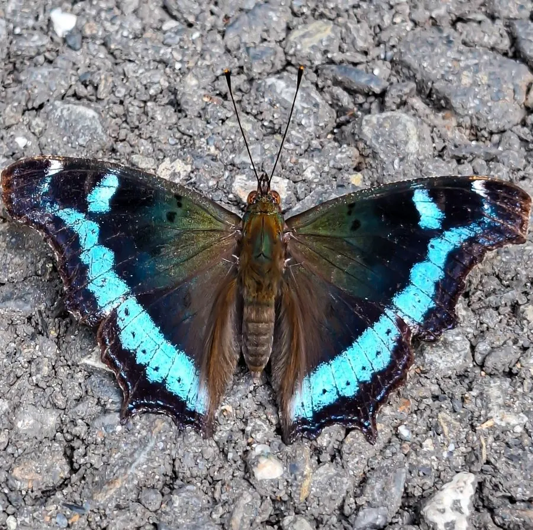

昆虫 · 动物界
琉璃蛱蝶 Kaniska canace

翅面黑褐、横贯一条蓝紫色琉璃光泽宽带的中型蛱蝶，常停在树干和岩石上，分布广、适应力强，是常见的林缘蝴蝶。
- 分类
- 门节肢动物门纲昆虫纲目鳞翅目科蛱蝶科属琉璃蛱蝶属
- 栖息环境
- 林缘、灌丛、溪边和花园，常停在树干和岩石上
- 地理分布
- 中国各地，以及日本、朝鲜、印度和东南亚
- 保护级别
- 暂无评估
物种志
琉璃蛱蝶成虫翅展 55–70 mm，翅面黑褐至深褐色，前翅和后翅中央横贯一条蓝色至紫蓝色的宽带，在光线下泛出琉璃般的光泽；翅外缘呈锯齿状，翅反面呈褐色，像一片枯叶。
琉璃蛱蝶广泛分布于中国各地以及日本、朝鲜、印度和东南亚，生活在林缘、灌丛、溪边和花园中，是适应性很强的蝴蝶。成虫飞行迅速，常停在树干、岩石或地面上晒太阳，也喜欢吸食树汁、腐果和动物粪便。幼虫取食菝葜等百合科植物，体表有分枝的刺。琉璃蛱蝶一年发生多代，以成虫越冬，在温暖的南方几乎全年可见。它因翅上的蓝色宽带而得名，是林缘观察中最容易遇见的蛱蝶之一，也是蝴蝶观察入门时最常见的种类。
形态与习性
- 食性成虫吸食树汁、腐果和花蜜，幼虫取食菝葜
- 翅展55–70 mm
- 特征翅面横贯蓝紫色琉璃光泽宽带
- 习性常停在树干和岩石上晒太阳
- 世代一年多代，以成虫越冬
- 分布中国各地及日本、朝鲜、印度、东南亚
趣味知识
- 琉璃蛱蝶翅上的蓝色宽带在阳光下会泛出琉璃一样的光泽。
- 它常停在树干上晒太阳，翅合拢时反面像一片枯叶。
- 即使在城市的公园里，也常能见到这种蝴蝶。